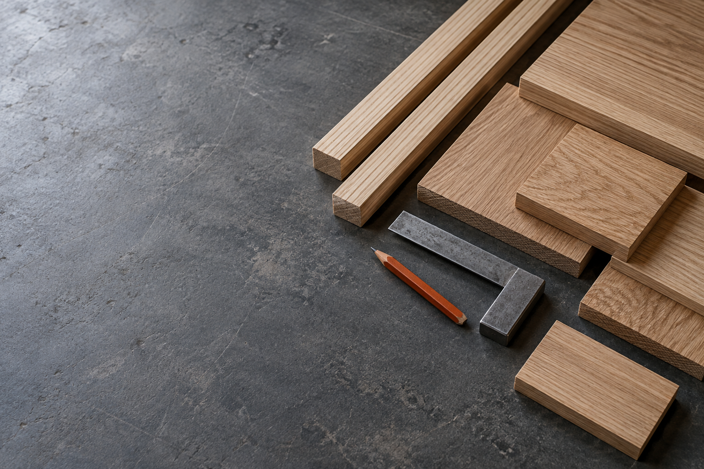
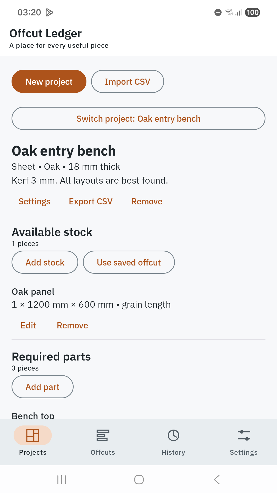
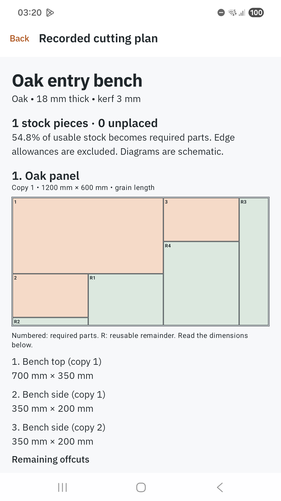
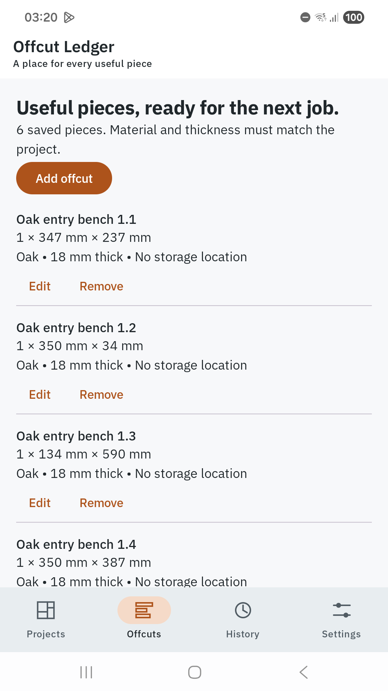
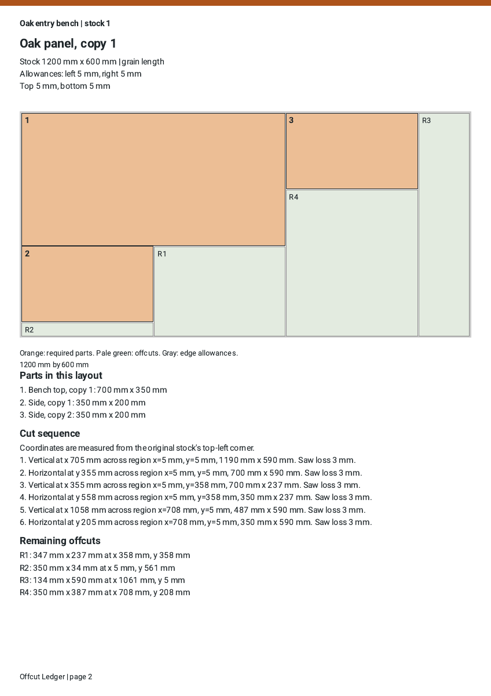

Every piece.
A next job.
Plan your cuts, keep useful offcuts, and bring a clear cutting plan to the bench.
Explore the app
From stock to a plan you can read.
Enter the material you have. Compare layouts. Keep a record of what you cut and what remains.

Start with real dimensions.
Metric or fractional inches, kerf, grain, quantities and edge allowances.

Compare the possibilities.
Best-found alternatives with numbered parts and a visible cut sequence.

Keep the useful pieces.
Match saved offcuts to the next job by material and thickness.
A plan for the bench.
A record for later.
Export dimensioned PDF plans and cut-out labels. Share or print on A4 or US Letter.
Completed jobs preserve the layout you used. Your current inventory changes only when you record the job.
Open a sample report
One purchase.
The whole workshop.
$6.99
Planned US launch price. UK £5.99. India ₹249.
Availability and your local price will appear on Google Play.
Android 8.0 and later. Release preparation is in progress.
Works offline
No account, ads, subscription or developer cloud.
Records you can move
CSV project exchange and complete record backups.
Stock and sheets
Linear lengths and rectangular sheet planning in one app.
Readable your way
Light and dark themes, larger system text and reduced motion.
Before you start cutting.
Does it guarantee the best possible layout?
No. Offcut Ledger compares deterministic searches and reports the best layouts it finds. It uses straight guillotine cuts. It does not claim mathematical optimality. Check the stated dimensions, grain and physical stock before cutting.
What stays on my device?
Your projects, offcut inventory, completed jobs and preferences. The app has no internet permission. Exported files go only to the destination you select; Android handles the apps or print services you choose.
Can I move to another phone?
Export a full backup before changing phones. Restore validates the archive before replacing records together. Preferences stay device-local. Backups are unencrypted and should be stored privately.
What are the size limits?
Up to 200 projects, 2,000 offcut records and 500 completed jobs. Each project supports up to 200 stock pieces and 500 required parts, with dimensions up to 20 metres. PDF diagrams are schematic, not full-size cutting templates.